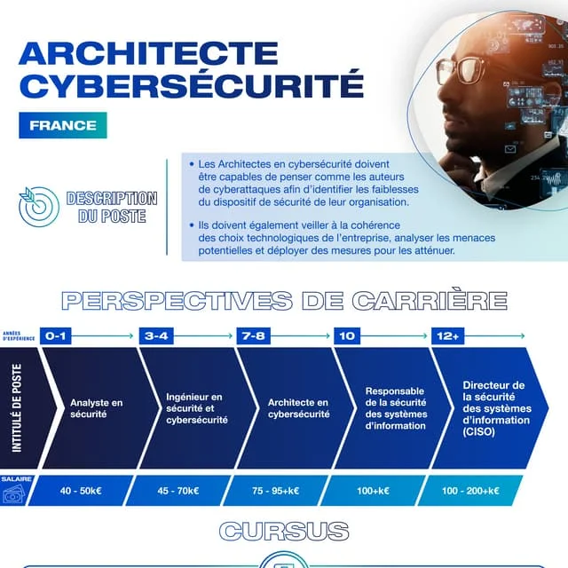

Architecte en cybersécurité
Un architecte de cybersécurité est un professionnel spécialisé dans la conception et la mise en œuvre des solutions de sécurité pour protéger les systèmes d'information d'une organisation.
